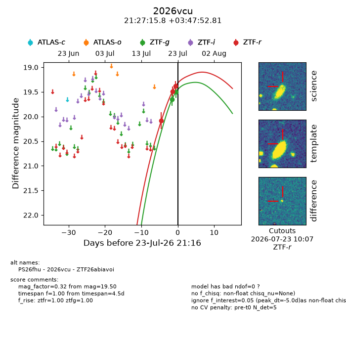
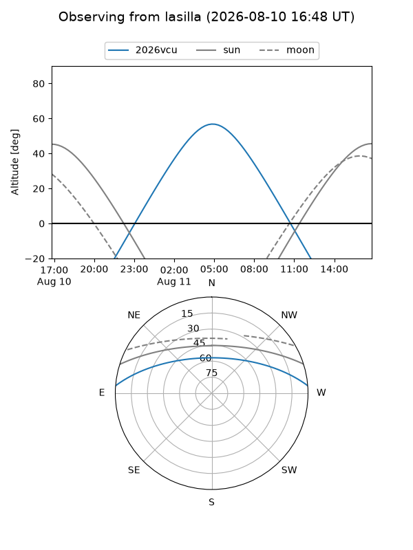
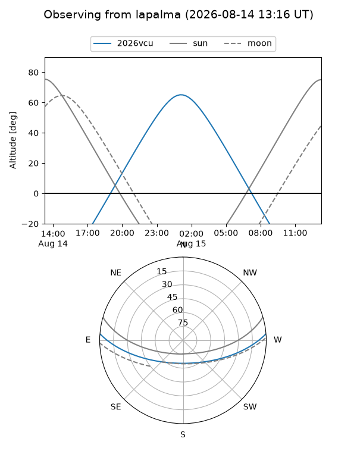
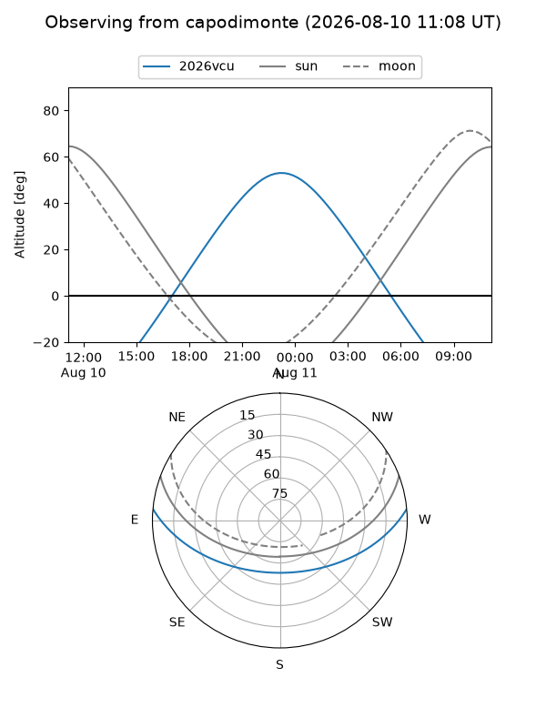
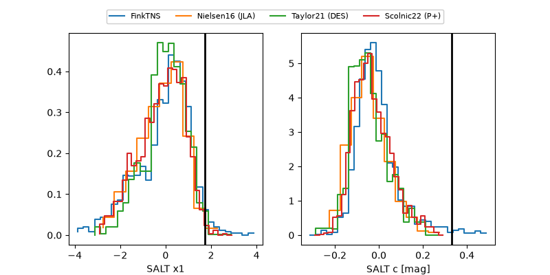

2026vcu
Target 2026vcu at 2026-07-23 21:19
Aliases and brokers:
FINK-ZTF: ztf.fink-portal.org/ZTF26abiavoi
Lasair-ZTF: lasair-ztf.lsst.ac.uk/objects/ZTF26abiavoi
ALeRCE-ZTF: alerce.online/object/ZTF26abiavoi
YSE-PZ: ziggy.ucolick.org/yse/transient_detail/2026vcu
TNS name: wis-tns.org/object/2026vcu
Direct TNS query: direct search
alt names
ZTF26abiavoi (ztf,fink_ztf)
2026vcu (tns,yse)
PS26fhu (panstarrs)
Coordinates:
equatorial (ra, dec) = 321.8157,+3.79800
equatorial (HMS+DMS) = 21:27:15.77,+03:47:52.81
galactic (l, b) = (56.9042,-31.87895)
Flags:
TNS type: nan
peak dt: -5.0
Photometry:
last ztfg=19.50, ztfr=19.38
2 ztfg, 3 ztfr detections
Lightcurve

Visibility



Additional plots
